Characters
Major Characters
Minor Characters
The characters of this anime show a different, very unique set of personalities being from several countries, but they all have one in common: they have a passion for skating.
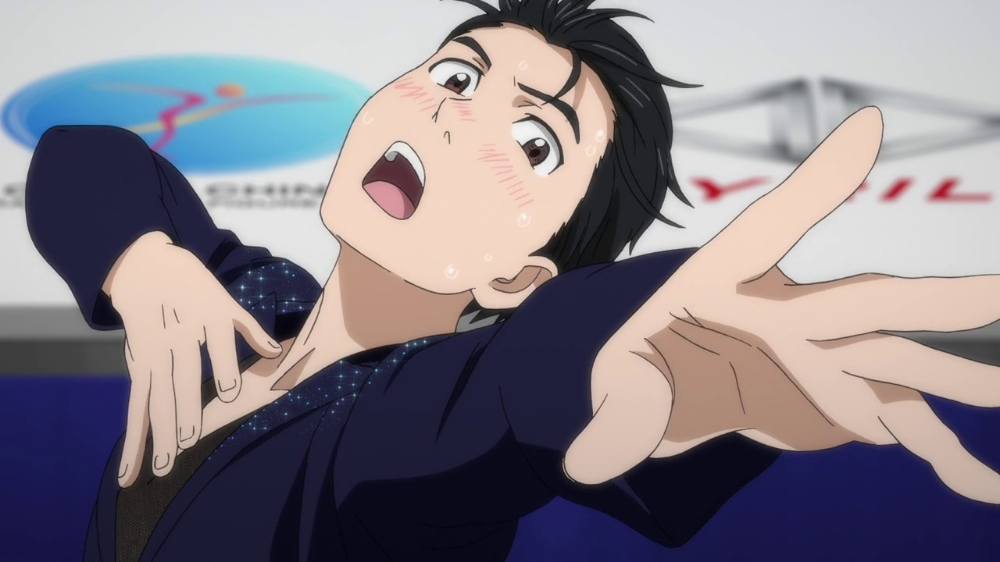
Yuuri Katsuki
♂
Nationality: Japanese
Birthday: November 29th (age 23-24)
Height: 173 cm
Family: Hiroko Katsuki, Toshiya Katsuki, Mari Katsuki, Viktor Nikiforov (fiancé)
Coach(es): Celestino Cialdini, Viktor Nikiforov (current)
Nickname(s): “Debu (Fatso)”, “Katsudon (Pork Cutlet Bowl)”, “Buta (Pig)”, “Kobuta-chan (Piglet) ”
- Born in Hasetsu, Kyushu, Japan.
- His family owns a hot spring inn called “Yu-topia Katsuki”
- After noticing his passion, his ballet teacher, Minako Okukawa, pushed him toward the skating and cheered him on ever since.
- Imitated Viktor’s skating routines as a child with his childhood friend, Yuuko Nishigori.
- After finding out that Viktor had a poodle, he then got one like it and named it after him, but the poor guy died soon later.
- Placed last in seventh place at last season’s Grand Prix Final.
- Loves pork cutlet bowls.
- Started binge eating after his loss during last Grand Prix Final.
- Very anxious and cried the most in this series due to his depression and “failures”.
- Viktor’s biggest fan (room filled with his posters).
- Chose theme of love for this season.
- Took silver at the Grand Prix Final (senior division).
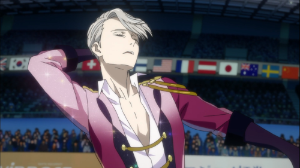
Viktor Nikiforov
♂
Nationality: Russian
Birthday: December 25th (age 27-28)
Height: 180 cm
Family: Yuuri Katsuki (fiancé)
Coach(es): Yakov Feltsman
- Born in St. Petersburg, Russia.
- At age 16, he held records and won the Junior World Championships.
- Had long hair as a teenager.
- Five consectutive wins at Grand Prix series in past seasons.
- Was inspired by Yuri’s cover of his routine of “Stay Close to Me” and how his body moved to the music (therefore inducing his voyage to Japan and becoming Yuri’s coach).
- Has poodle named Makkachin.
- Loves pork cutlet bowls.
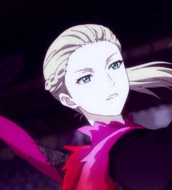
Yuri Plisetsky
♂
Nationality: Russian
Birthday: March 1st (age 15)
Height: 163 cm
Family: (his beloved grandfather) Nikolai Plisetsky
Coach(es): Yakov Feltsman, Lilia Baranovskaya
Nickname(s): “The Russian Punk”, “Yurio”, “The Fairy of Russia”.
- Born in Moscow, Russia.
- Won the Junior World Championship and Junior Grand Prix.
- Loves pork cutlet bowls.
- Loves grandpa’s pirozkhis.
- Loves grandpa.
- Has fanclub (“Yuri’s angels”)
- Close friends with Otabek Altin.
- Took gold at the Grand Prix Final (senior division).
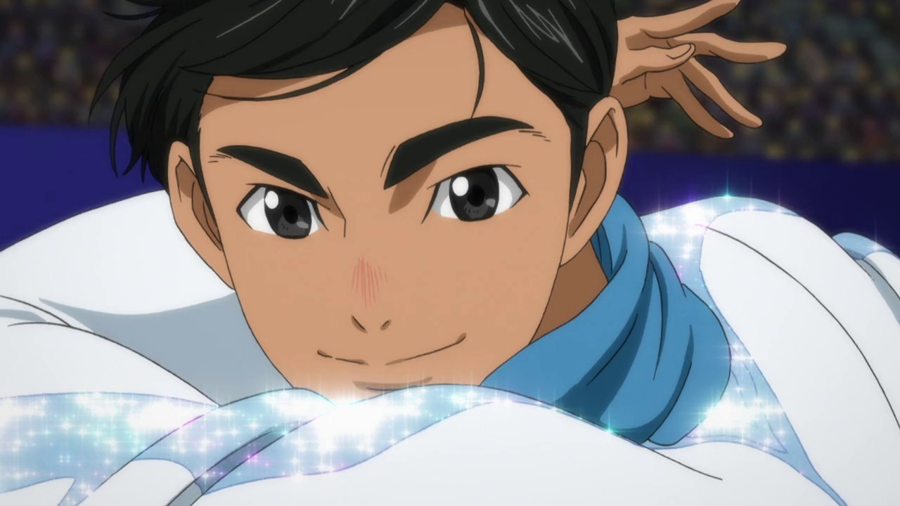
Phichit Chulanont
♂
Nationality: Thai
Birthday: April 30th (age 20)
Height: 165 cm
Coach(es): Celestino Cialdini
- Born in Bangkok, Thailand.
- Yuri’s rink-mate in Detroit.
- “Gifted taker of selfies”
- Won gold at the Cup of China competition.
- First Thai skater to make it to Grand Prix.
- Wants to introduce skating to his country.
- Placed last at the Grand Prix Final.
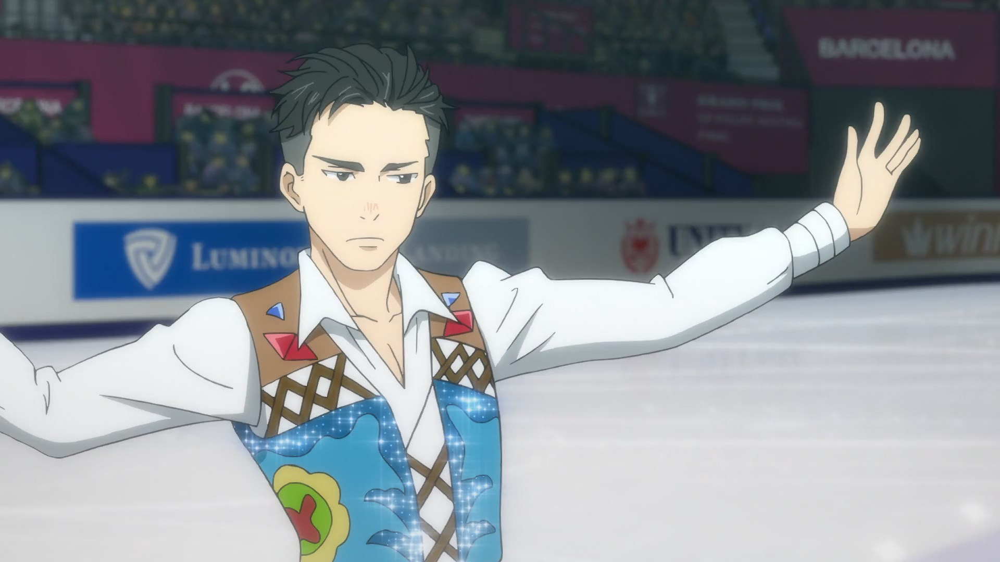
Otabek Altin
♂
Nationality: Kazakh
Birthday: October 31st (age 18-19)
Height: 168 cm
Nickname(s): “The Hero of Kazakhstan”
- Born in Almaty, Kazakhstan.
- Trained at Yakov Feltsman’s summer campe during junior divison, alongside Yuri Plisetsky five years ago.
- Good friends with Yuri Plisetsky.
- Quiet and doesn't seem to have a social life.
- Placed fourth at the Grand Prix Final.
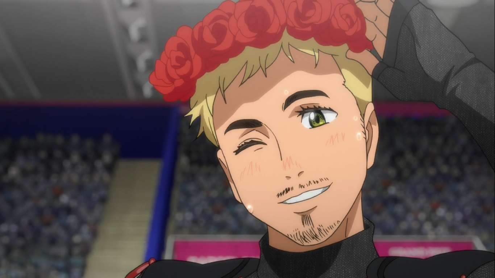
Christophe Giacometti
♂
Nationality: Swiss
Birthday: February 14th
Height: 183 cm
Coach(es): Josef Karpisek
Nickname(s): Chris
- Motivated as a child when watching Viktor, wanted to skate alongside him in the future.
- Won silver at last season's Grand Prix Final.
- Has a lot of sex appeal.
- Placed fifth at Grand Prix Final.

Jean-Jacques Leroy (JJ)
♂
Nationality: Canadian
Birthday: July 15th (age 19)
Height: 178 cm
Family: Nathalie Leroy, Alain Leroy, Isabella Yang (fiancée)
Coach(es): Nathalie Leroy, Alain Leroy
- It's JJ style!
- From a family of talented skaters.
- Has several “JJ” and Canada themed tattoos.
- Collaborated with a popular rock band to create a program song “The Theme of King JJ”.
- Has a fanclub in which his fiancée is apart of (”JJ girls“).
- Took silver at last season’s Final.
- Took gold at all competitions leading to Final, but cracked under the pressure of the Final.
- Took bronze at the Grand Prix Final.
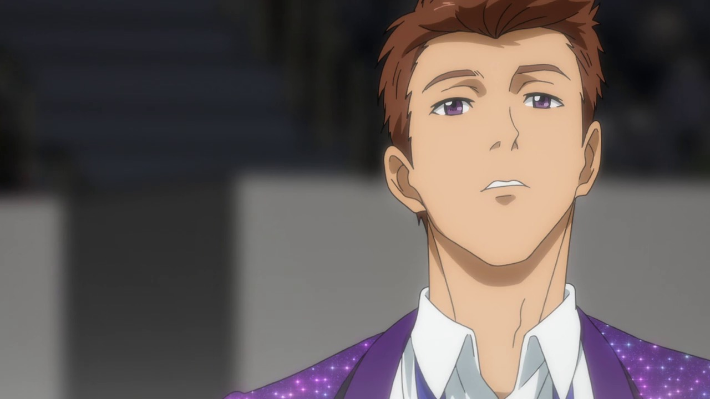
Michele Crispino
♂
Nationality: Italian
Birthday: September 13th (age 22)
Height: 179 cm
Family: Sara Crispino (twin sister)
Nickname(s): Mickey
- Born in Naples, Italy.
- Possessive of his sister.
- Good friends with Emil.
- Placed seventh at the Rostelecom Cup, therefore, being unable to compete in the Final.
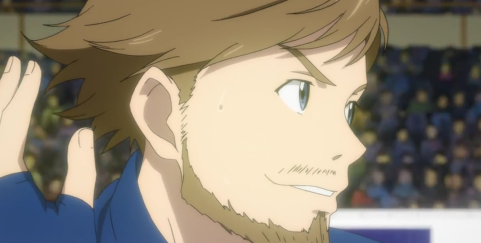
Emil Nekola
♂
Nationality: Czech
Birthday: July 8th (Age 18)
Height: 183 cm
- Chose theme of cyberpunk/I am ceased to be human.
- Took bronze at Skate Canada.
- Placed eighth at the Rostelecom Cup, therefore being unable to compete in the Final.
- Good friends with Michele and his sister, Sara.
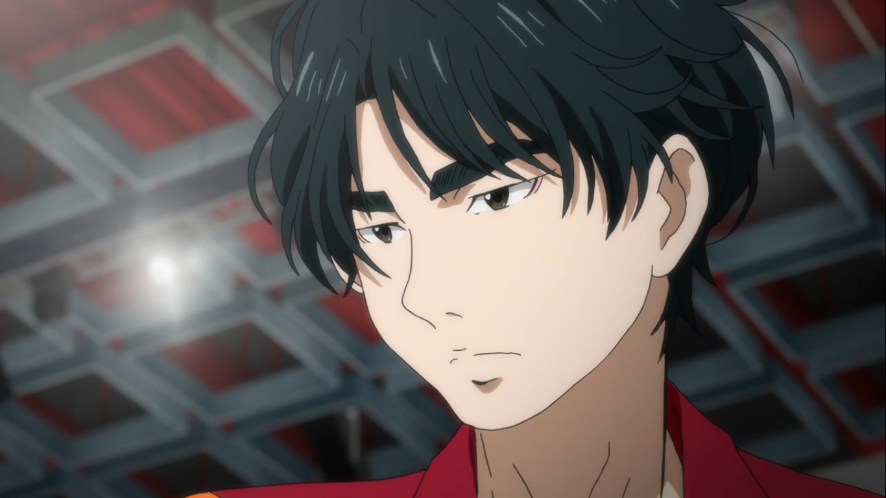
Seung-gil Lee
♂
Nationality: South Korean
Birthday: June 6th (age 23)
Height: 170 cm
Coach(es): Min-so Park
- Chose the theme of greed for this season.
- Calculated score during his short program at the Rostelecom Cup.
- Placed last in the Rostelecom Cup.
- Cold heart (skates with a pokerface)
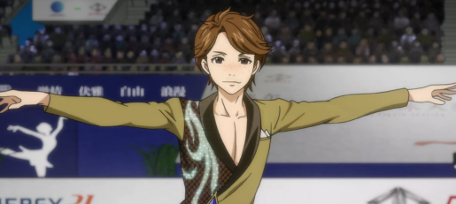
Guang Hong Ji
♂
Nationality: Chinese (Mandarin)
Birthday: January 7th (age 17)
Height: 160 cm
- “I’m going to quit all social media and focus on practicing.”
- Took bronze at Skate America.
- Good friends with Phichit and Leo.
- Doesn't like hotpot.
- Didn't make the Rostelecom Cup.

Leo de la Iglesia
♂
Nationality: American
Birthday: August 2nd (age 19)
Height: 167 cm
- Mexican-American
- Took gold at Skate America.
- Placed last in the Cup of China, therefore not making it to the the Rostelecom Cup.
- Good friends with Guang Hong Ji.
- Skated to and choreographed a program for one of his favourite songs for his short program: “Still Alive”.
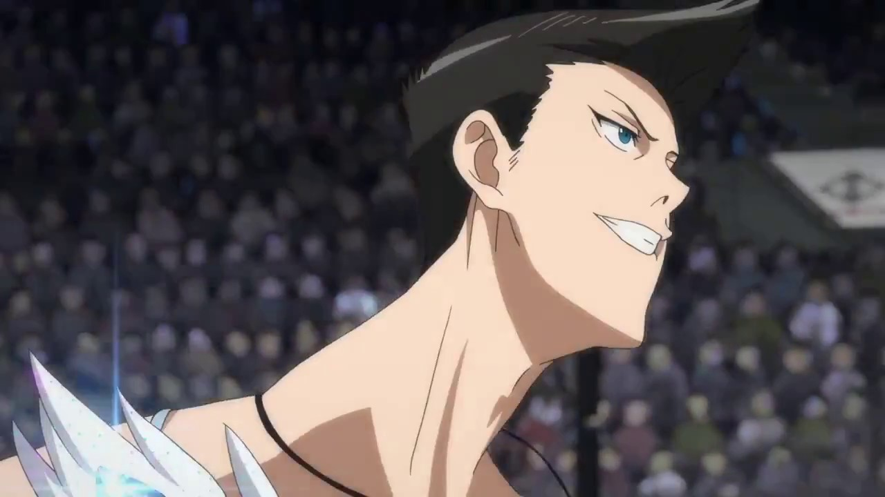
Georgi Popovich
♂
Nationality: Russian
Birthday: December 26th (age 25)
Height: 178cm
Coach(es): Yakov Feltsman
- Trained with Yakov, alongside Yurio and Mila.
- Chose the theme of heartbreak for this season.
- During his short program and free skate at the Cup of China, his mind was on Anya, his ex-girlfriend who had left him for another man. Thoughts on his ex then steered him away qualifying for the Rostelecom Cup.
- Wants to succeed Viktor now that he’s off the rink in Russia.
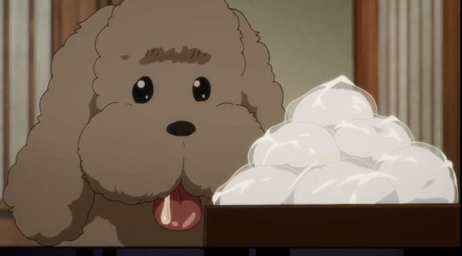
Makkachin
Type: Silver-beige poodle
Family: Viktor Nikiforov (owner)
Back to top